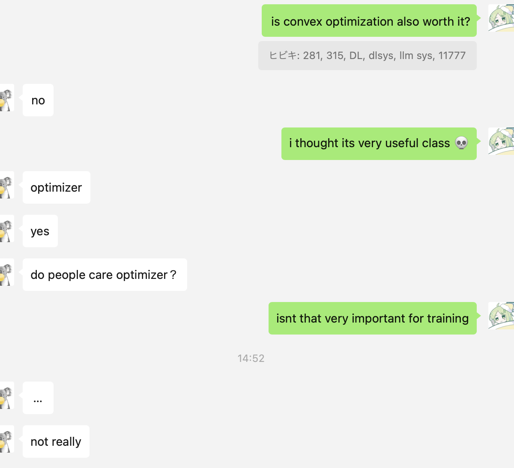

20 Apr 2024
I've recently been looking at LLMs, and I think I somewhat have an idea about their architecture at least at a high level. This kinda feels like how I used to write kernels before I went to uni, I had a lot of fun and thought I understood stuff, but I only really acquired a decent understanding after taking all those systems classes at uni. I can imagine its the same for AI/ML. I could look at one or two things that I think are important or relevant, but having a broad overview of the field first will probably help a lot. I cant really say that I "understand" stuff in ML, I just know that they exist. If I hav learned one thing in systems, it's that really understanding what u r working with helps IMMENSELY. For ML, I want to understanding how the science, software tools (libraries etc), and the hardware work in detail. I'll start with the science.
I'm gonna follow CMU courses, cuz most of them have at least their lecture slides available publicly. For now, I plan to do these in sequence:
The broad topics as seen on the schedule are:
Oh boy. I've "officially" taken this class (I took 281 too but dropped it right at the end, and I dont remember much from it). But as always, I wasn't able to learn as much as I'd liked to have from "taking" the class, so I'll do it again myself. This was just last sem so I'm a lot more familiar with the topics:
I've only heard stories of suffering from people who took this class. Here's what I think the class covers from looking at the lecture topics:
This was a class I came across,, I think on youtube? (sometimes the recs r good). I thought this would be a perfect class for me to learn about DL, cuz I love systems and it has both "deep learning" and "systems" in its title.
This one seems to be more focused on LLMs (well, that's obvious from the title).
"Multimodal ML". This shud act as a good segue into other kinds of models than just LMs. I really want to look at diffusion models, but it's impractical for me at this moment to jump unto those. I'm not going to talk about the material, because the topics are pretty much alien to me (feel free to have a look yourself!).
This is a weird one. I knew about this class cuz a friend had some trouble getting in, and we talked about it at the time (it was quite an amusing chain of events). At a glance, it looked like this would be an important class for learning more about training. I asked him whether it's worth it, and he said:

He's a ML guy and I don't know much about this, so I'll have to take his word on that. But it doesn't hurt to learn, right? So I might do this one too.
This is probably going to take a lot of time, with an expected 10-20hr/week workload @ 4 months per course. Time which I don't think I have. But,, if I don't do all this, I'll probably never make it, so it doesn't hurt to try. It does seem like the first class (AI) may be skippable, but I'll do it anyway (and it does seem to be the easiest of the bunch). I won't start right away, but probably in a week or two from now when I hopefully will have time. I plan on posting my progress on this site approximately weekly, with detailed reports on what I learned/found interesting. I'll hopefully no longer be an imposter in the ML community by the end of this.
Also, if you have any comments or suggestions, feel free to DM me on twitter!